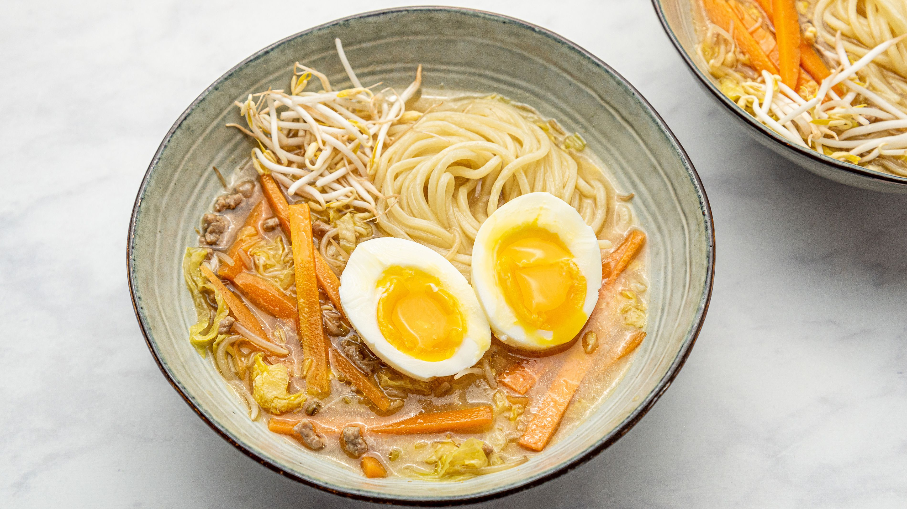

Ingredients
- Shin Ramen Noodles
- Sesame Oil
- Green Onion
- Sesame Seeds
- Chicken Stock
- Ground Beef
- Miso Stock
- Soy Bean Paste
- 2 Eggs
- Half a sheet of nori
Directions
- In a pot combine 2 cups of chicken stock, 2 scoops of miso, Shin Ramen
chili seasoning. In another bowl, grind sesame seeds and combine with sesame oil
and soybean paste. Add to broth.
- Once fully mixed, bring to a boil and add package of ramen noodles
- In a seperate pot, soft-boil to medium-sized eggs
- Assemble bowl with broth, noodles, eggs and garnish with nori cut into squares,
and green onions